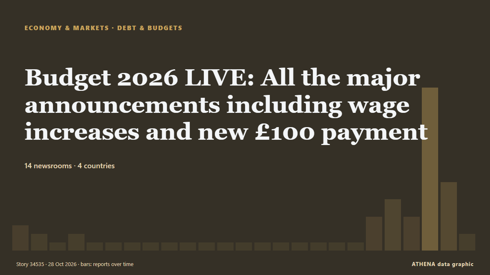

Budget 2026 LIVE: All the major announcements including wage increases and new £100 payment

The Budget is John Healey's chance to set out the government's spending plans on issues including the minimum wage and alcohol duty. de Liverpool Echo
Relayé de façon indépendante par 14 médias dans 4 pays depuis le 26 oct. ; premier à l'annoncer : The Herald (Scotland) ; la couverture faiblit. ATHENA juge le risque faible (1.8/10), surtout en raison de la gravité des dommages décrits et de la qualité des preuves. La confiance est de 76 % (élevée) : 14 médias indépendants le confirment, avec une fiabilité moyenne des sources de 69 %. Médias par pays : Royaume-Uni (30), Belgique (2), Chypre (2). Couverture : du 26 oct. au 28 oct., 48 heures.
Pourquoi c'est important: Les évolutions économiques et de marché se répercutent sur les prix, l'emploi, le coût du crédit et l'investissement.
Ce qui a changé : 37 nouveaux articles de 15 rédactions dans les 24 heures jusqu'au 28 oct..
Premier titre : Budget 2026 LIVE: What time John Healey will deliver first Budget as Andy Burnham's chancellor
Les titres sont affichés en anglais, tels que publiés.
En un coup d'œil
Sélectionné, noté et rédigé par la méthodologie publiée d'ATHENA. Aucun rédacteur n'intervient sur un événement en particulier. Comment il est produit ›
| 26 Oct 15:45 UTC | 2 |
|---|---|
| 26 Oct 17:45 UTC | 1 |
| 26 Oct 19:45 UTC | 0 |
| 26 Oct 21:45 UTC | 1 |
| 26 Oct 23:45 UTC | 0 |
| 27 Oct 01:45 UTC | 0 |
| 27 Oct 03:45 UTC | 0 |
| 27 Oct 05:45 UTC | 0 |
| 27 Oct 07:45 UTC | 0 |
| 27 Oct 09:45 UTC | 0 |
| 27 Oct 11:45 UTC | 0 |
| 27 Oct 13:45 UTC | 0 |
| 27 Oct 15:45 UTC | 0 |
| 27 Oct 17:45 UTC | 0 |
| 27 Oct 19:45 UTC | 0 |
| 27 Oct 21:45 UTC | 0 |
| 27 Oct 23:45 UTC | 0 |
| 28 Oct 01:45 UTC | 0 |
| 28 Oct 03:45 UTC | 0 |
| 28 Oct 05:45 UTC | 3 |
| 28 Oct 07:45 UTC | 5 |
| 28 Oct 09:45 UTC | 3 |
| 28 Oct 11:45 UTC | 18 |
| 28 Oct 13:45 UTC | 7 |
| 28 Oct 15:45 UTC | 1 |
| 26 Oct 16:54 UTC | 0.0 |
|---|---|
| 28 Oct 08:46 UTC | 0.8 |
| 28 Oct 16:11 UTC | 1.8 |
Pourquoi ces chiffres
Importance
Risque
Confiance
La couverture : qui l'a annoncé, et quand
titre tel que publié · ouvre l'original- The Herald (Scotland) · Royaume-UniWhy working out what Scotland gets from this Budget may be a lot more complicated
- Yorkshire Post · Royaume-UniThe Budget must deliver certainty for Yorkshire farmers - Paul Tompkins, NFU
- Guardian Business · Royaume-UniBookies fear budget hit but gaming machine self-harm killed off the old-fashioned shops
- Politico Europe · BelgiqueUK announces further tariff suspensions on food, drink and fuel
- The Guardian · Royaume-UniWhat to expect from John Healey’s first budget: who wins, who pays?
- Yorkshire Post · Royaume-UniBudget 2026: what to expect for Yorkshire from John Healey
- The Herald (Scotland) · Royaume-UniBudget live: Scottish Government confirms £100 energy payment for Scots
- Liverpool Echo · Royaume-UniBudget 2026 LIVE: What time John Healey will deliver first Budget as Andy Burnham's chancellor
- Cyprus Mail · ChypreHealey seeks to steer UK through ‘difficult moment’ with low-key budget
- The Guardian · Royaume-UniBudget 2026: £100 energy payment for millions and rise in bank tax as watchdog warns on stalling living standards – as it happened
- Liverpool Echo · Royaume-UniBudget 2026 LIVE: All the major announcements including wage increases and new £100 payment
- Manchester Evening News · Royaume-UniBudget 2026 RECAP as £100 payment to millions among John Healey's major announcements
- Birmingham Mail · Royaume-UniBudget Day live - Andy Burnham's first spending plan promises 'breathing space' for West Midlands
- Liverpool Echo · Royaume-UniHow to watch the Budget 2026 live on TV as Chancellor John Healey to deliver speech
- Evening Standard (London) · Royaume-UniBudget Live: Chancellor John Healey promises support for ‘working people’
- The Irish News (Belfast) · Royaume-UniHealey promises Budget will help UK chart a course through global economic storm
- Belfast Telegraph · Royaume-UniBudget Live: Chancellor John Healey promises support for ‘working people’
- Yorkshire Post · Royaume-UniBudget 2026: Chancellor announces £100 energy payment for households
- The Herald (Scotland) · Royaume-UniBudget: Defence spending to hit three per cent of GDP by 2030 amid growing threats
- Nation.Cymru · Royaume-UniHealey promises Budget will help UK chart a course through global economic storm
- Liverpool Echo · Royaume-UniJohn Healey announces millions to receive £100 payment to help with energy bills this winter in 2026 Budget
- Manchester Evening News · Royaume-UniBudget 2026: John Healey announces £100 payment into bank accounts of 20 million UK households
- The National · Émirats arabes unisUK tries to woo wealth creators in budget dominated by Middle East war
- Manchester Evening News · Royaume-UniAndy Burnham government announces major business rates overhaul for pubs and restaurants
- The Guardian · Royaume-UniHealey gives households £100 to help navigate ‘global economic storms’
- Evening Standard (London) · Royaume-UniHealey Budget offers help for families and firms hit by global economic storm
- Politico Europe · BelgiqueHealey targets Brits’ energy costs, raids banks in first budget
- The Scotsman · Royaume-UniUK Budget 2026: What John Healey's spending plans mean for Scotland and you
- Cyprus Mail · ChypreChancellor offers billions of pounds of help for households amid global economic storms
- Nation.Cymru · Royaume-Uni£100 for millions of households as Healey Budget offers help for families and firms hit by global economic storm
- Liverpool Echo · Royaume-UniFull list of Budget 2026 changes to wages, tax and cost of living including £100 payment
- The Guardian · Royaume-Uni‘A pretty grim picture’: outlook for UK living standards slashed despite Healey’s budget
- Yorkshire Post · Royaume-UniAnalysis: John Healey loves rabbits, but there were no surprises in Budget of caution
- Guardian Business · Royaume-UniWill John Healey’s ‘breathing space’ budget deliver what Britain needs? Our panel responds | Panel
- Yorkshire Post · Royaume-UniBudget 2026: John Healey announces £100 off energy bills for 20m households